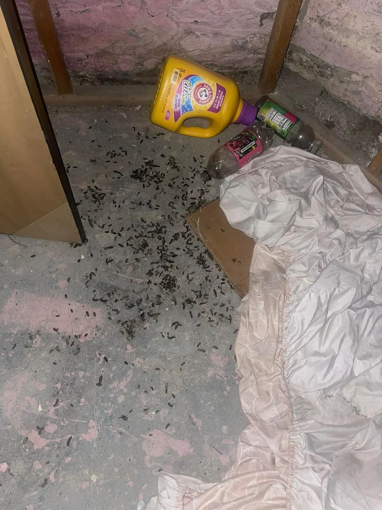

Mice Removal &
Rodent Control.
Exclusion-first.
RodentX runs full rodent programs — entry survey, removal, sealing, and monitoring — for homes and businesses across the Finger Lakes. Exclusion-first: we seal the building, not just treat the symptoms.
Signs of mice and rats
Rodents are heard before they are seen, and the signs accumulate in predictable places — along walls, behind storage, and wherever food is kept.
- Scratching or scurrying in walls, ceilings, or the attic — especially at night
- Droppings along baseboards, in cabinets, in the basement, or near food storage
- Gnaw marks on wood, wiring, food packaging, or insulation
- Grease rub marks along regular runs — rats use the same routes nightly
- Nesting material in quiet corners, and a stale, musky odor in closed spaces
Tell us the town and the signs. The survey identifies the animal from the evidence and finds how it is getting in.

How mice and rats use a building
Mice and rats are commensal animals — they live alongside buildings because buildings provide food, water, warmth, and cover in one place. A mouse needs an opening only about a quarter of an inch wide; a young rat needs about half an inch. Gaps at the foundation, door sweeps that no longer meet the floor, vents without intact covers, and the holes drilled for pipes and wires are the standard entries. Most buildings have several.
Inside, rodents run set routes — along baseboards, pipes, and joists — and nest close to food. Activity rises in autumn as animals move in from the cold, but an established indoor population is a year-round problem, breeding in the structure. The gnawing is constant and indiscriminate: wood, packaging, insulation, and wiring. Droppings and urine contaminate the surfaces they cross, including food storage. Left alone, a rodent problem does not stabilise. It grows. Mice breed year-round indoors, and a pair with food and cover becomes a population in a matter of months; rats are slower to establish and harder to shift once they have. The age of a problem matters to its scale, which is why the survey records how established the signs are — fresh droppings and heavy rub marks describe different jobs.
The usual entries
Rodent entries are rarely exotic. The survey checks the same short list on every building, because the list accounts for most of what is found: gaps where the foundation meets the sill; door sweeps worn or cut short; vent openings with missing or damaged covers; the penetrations for water, gas, electric, and cable lines, which are drilled wider than the line and rarely sealed; garage door corners; and roofline openings where rodents that climb — rats especially — come down into wall voids. Each entry is small. Together they make the building open. The survey’s job is to find all of them, because sealing most of the entries is the same as sealing none of them.
What we do
- Entry-point survey — foundation, doors, vents, roofline, and utility penetrations, with the findings in writing
- Removal — matched to the building and the infestation, as part of the programme
- Sealing — every entry closed with durable, animal-proof materials and listed in writing
- Harborage reduction guidance — what to clear, seal, and store differently, based on what the survey found
- Monitoring — follow-up checks until the activity stops
The programme is exclusion-first. Removal alone, without sealing, is a subscription to the same problem — new animals find the same open entries. The seal is what ends it.
What we seal
Foundation gaps, door sweeps, vent covers, pipe and wire penetrations, garage and sill gaps, and roofline openings. Small gaps matter at rodent scale — a quarter-inch opening is a door to a mouse — so the seal list is built from the survey, entry by entry. Every seal is listed in writing: what was sealed, and with what.
What you get in writing
The survey findings, the species identified and the evidence for it, the seal list and materials, what was removed, and the monitoring record. The file is how the job is verified — by you, at any point, against the building itself. For a business, the same file serves a second purpose: it is the record an inspector, an auditor, or a landlord is shown when they ask what is being done about rodents.
Prevention
Prevention is the part of the programme that continues after we leave. Food and waste stored so they do not feed harborage. Storage kept off floors and away from exterior walls where practical, so runs and nests are visible early. Vegetation and clutter against the foundation cleared, so entries can be seen. And the seals themselves inspected as part of ordinary maintenance — a door sweep that fails reopens the building. The survey findings tell you which of these matter most for your building.
Running a business? Rodent programmes for restaurants, warehouses, farms, wineries, and property managers run on their own page: Commercial Rodent Control →